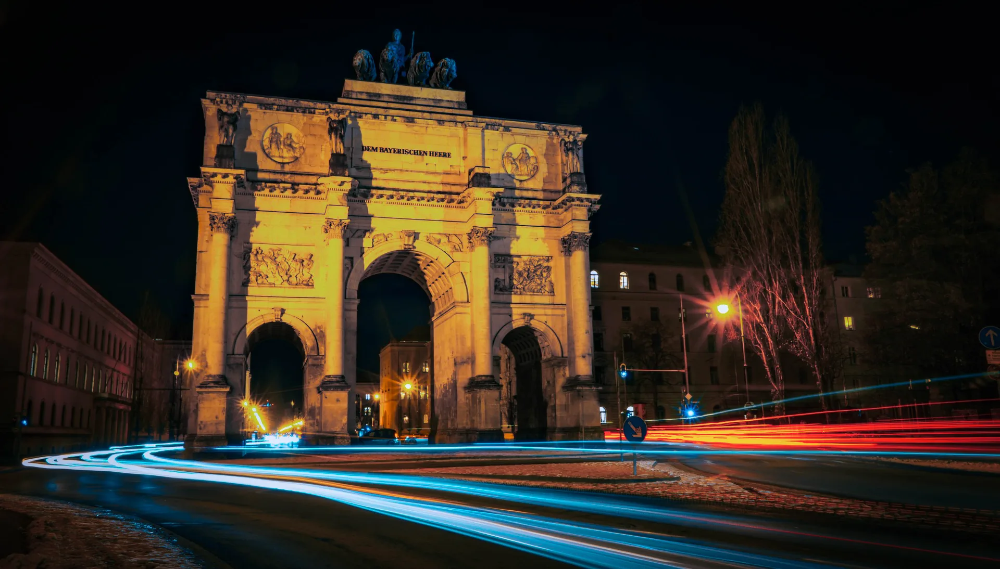
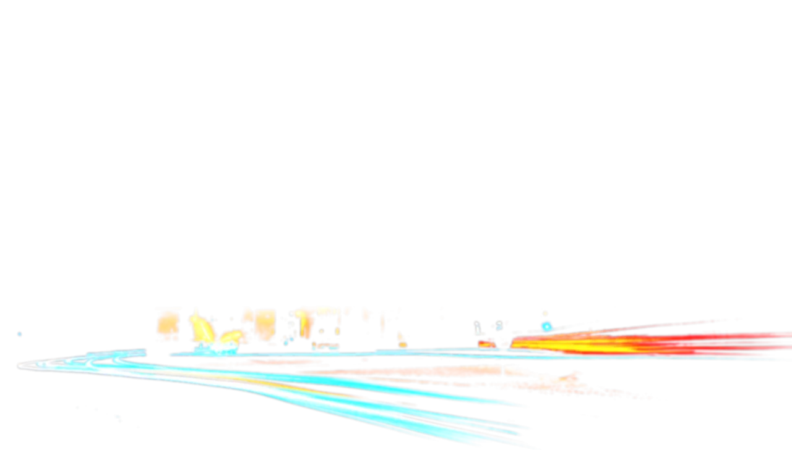

Konzept & Strategie
Wir beginnen damit, Ihre Vision, Ziele und Zielgruppe zu verstehen. Durch ausführliche Beratung entwickeln wir ein kreatives Konzept und eine strategische Ausrichtung, die genau auf Ihr Projekt zugeschnitten sind.
Foto- und Videoproduktion
Aus Ihrer Idee wird Bild und Bewegtbild, das Menschen erreicht.
Unser Prozess
Kreativität, strategisches Storytelling und hochwertige Produktion – vom ersten Konzept bis zur finalen Lieferung. Foto und Film aus einer Hand.
Wir beginnen damit, Ihre Vision, Ziele und Zielgruppe zu verstehen. Durch ausführliche Beratung entwickeln wir ein kreatives Konzept und eine strategische Ausrichtung, die genau auf Ihr Projekt zugeschnitten sind.
Detaillierte Planung bringt das Konzept zum Leben – Storyboarding, Location-Suche, Shotlisten, Terminplanung und Crew-Zusammenstellung für einen reibungslosen Produktionstag.
Drehtag und Fotografie mit Präzision ausgeführt. Professionelle Ausrüstung, fachgerechtes Licht und ein kreativer Blick fangen jedes Bild in höchster Qualität ein.
Schnitt, Color Grading, Sound Design und Motion Graphics verwandeln Rohmaterial in ein poliertes Endprodukt – geliefert in den Formaten, die Sie benötigen.
Kontakt
Ob Unternehmen oder privater Moment, wir sind bereit. Kontaktieren Sie uns für ein unverbindliches Gespräch.
Schreiben Sie uns
Hinterlassen Sie uns eine Nachricht, und wir melden uns schnellstmöglich bei Ihnen.
Blog
Fotostrecken und Tipps direkt vom Set: was wir zuletzt vor der Kamera hatten und was Sie davon für Ihr eigenes Shooting mitnehmen können.
Alle Beiträge ansehen

Adresse
GREENWOODCREEK Foto- und Videoproduktion Jan Neumeyer Albert-Schweitzer-Straße 56 81735 München
© 2026 GREENWOODCREEK. Alle Rechte vorbehalten.